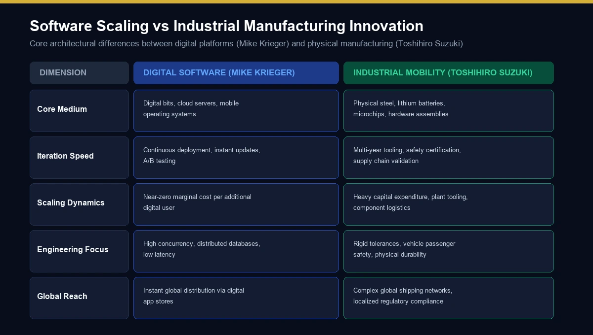
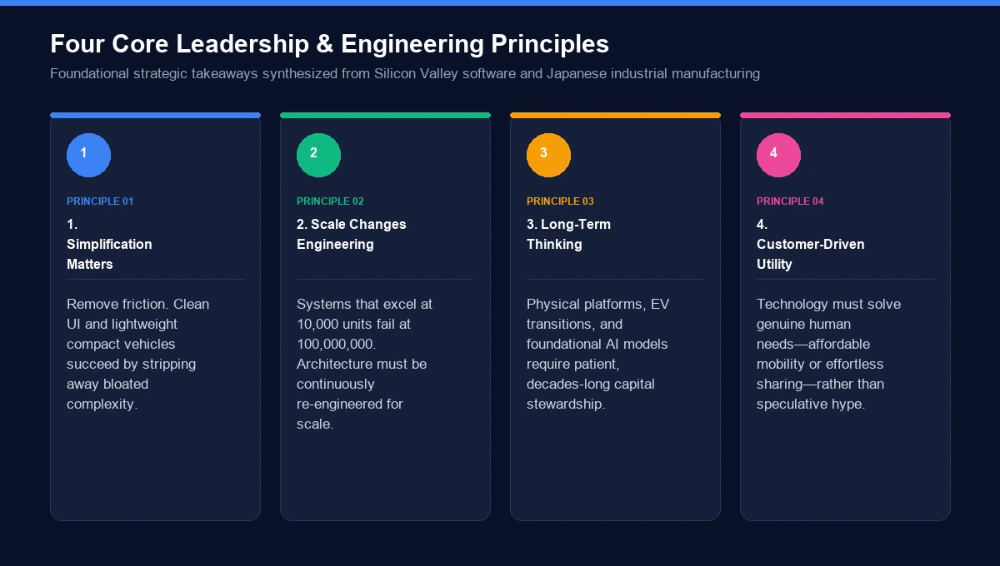
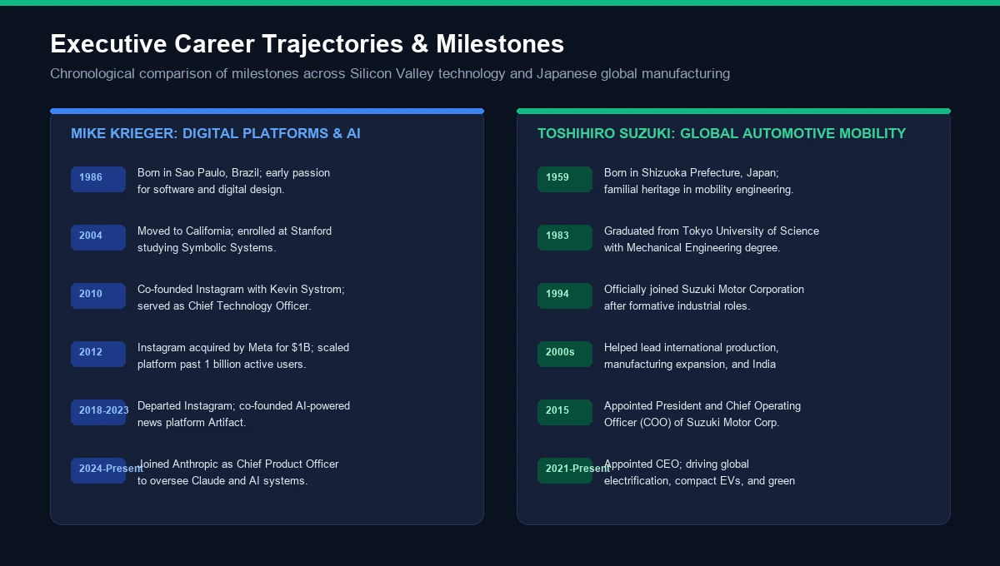

If you searched for mike krieger and toshihiro suzuki, you may be wondering why these two names appear together and whether they have worked together.
The short answer is that they represent two very different professional worlds.
Mike Krieger is a Brazilian-born software engineer, entrepreneur and product leader best known for co-founding Instagram with Kevin Systrom and serving as Instagram's chief technology officer. His later career moved into AI and product development, including Artifact and Anthropic.
Toshihiro Suzuki is a Japanese business executive and the Representative Director and President of Suzuki Motor Corporation, the global manufacturer whose businesses include automobiles, motorcycles, outboard motors and other mobility-related products. Suzuki's current corporate information lists him in that role as of June 25, 2026.
There is no reliable evidence establishing that Krieger and Suzuki are business partners, co-founders, relatives or collaborators. Their names are better understood as a comparison between two different approaches to innovation: one rooted in software, consumer technology and artificial intelligence, and the other in manufacturing, mobility and long-term industrial management.
This article explains both careers, their companies, leadership responsibilities, major milestones, areas of innovation and what the search term actually means.
Who Are Mike Krieger and Toshihiro Suzuki?
At first glance, putting these two executives in the same article might seem unusual.
Krieger built his reputation in Silicon Valley through software products and social media. Suzuki developed his career inside one of Japan's major manufacturing companies and eventually became its president.
Yet there is an interesting reason to compare them: both careers demonstrate how products can scale when technology is combined with a strong understanding of users and markets.
Mike Krieger
Mike Krieger, whose full name is Michel Krieger, was born in São Paulo, Brazil, in 1986. He later moved to California and attended Stanford University, where he studied symbolic systems. He became particularly associated with user experience, engineering and product development.
His defining achievement was co-founding Instagram with Kevin Systrom in 2010.
Krieger served as Instagram's CTO and was heavily involved in building and scaling the technology behind the platform. Anthropic said when announcing his appointment in 2024 that he had helped grow Instagram's engineering organization to more than 450 people while the service scaled to more than one billion users.
Toshihiro Suzuki
Toshihiro Suzuki is a Japanese business executive associated with the automotive industry.
He is the Representative Director and President of Suzuki Motor Corporation. Suzuki's official corporate outline, updated with information as of June 25, 2026, lists Toshihiro Suzuki as its Representative Director and President.
His professional career has been closely connected with Suzuki's manufacturing, product planning, automobile and motorcycle businesses, as well as the company's broader international operations.
Suzuki's corporate history records his appointment as president in 2015.
Mike Krieger and Toshihiro Suzuki at a Glance
Category | Mike Krieger | Toshihiro Suzuki |
|---|---|---|
Primary industry | Technology and artificial intelligence | Automotive and mobility |
Best known for | Co-founding Instagram | Leading Suzuki Motor Corporation |
Major company | Instagram / Anthropic | Suzuki Motor Corporation |
Professional background | Software engineering, UX, product development | Manufacturing, product planning, corporate management |
Major technology area | Social media, AI, digital products | Vehicles, mobility, manufacturing and electrification |
Instagram connection | Co-founder and former CTO | None documented |
Current role in 2026 | Anthropic Labs | Representative Director and President, Suzuki Motor Corporation |
National background | Brazilian-born | Japanese |
Main innovation environment | Software and AI | Industrial manufacturing and mobility |
The comparison shows why the two names should not be interpreted as evidence of a shared company or partnership.
Is There a Connection Between Mike Krieger and Toshihiro Suzuki?
This is perhaps the most important question behind the search query.
Are Mike Krieger and Toshihiro Suzuki Business Partners?
There is no reliable public evidence establishing a significant direct business partnership between Mike Krieger and Toshihiro Suzuki.
Krieger's documented career centers on Instagram, Artifact and Anthropic, while Suzuki's career centers on Suzuki Motor Corporation.
Recent articles making the comparison similarly state that the two are not documented as business partners or collaborators.
Therefore, claims that the two jointly founded a company, developed a product together or maintained a major business relationship should not be presented as established facts without a primary source.
Are Mike Krieger and Toshihiro Suzuki Related?
There is also no reliable evidence establishing a family relationship between them.
The similar appearance of the names in search results does not establish a personal connection.
Search engines frequently connect people because they appear together in articles, searches or related topics. That association should not be confused with a documented relationship.
Who Is Mike Krieger?
Mike Krieger is best known for his role in creating Instagram.
His career is particularly interesting because it combines:
- Software engineering
- User experience
- Mobile applications
- Product development
- Infrastructure scaling
- Entrepreneurship
- Artificial intelligence
Early Career and Education
Krieger was born in São Paulo and moved to the United States in 2004 to attend Stanford University. He studied symbolic systems, an interdisciplinary field involving areas such as computer science, psychology and human-computer interaction.
Before Instagram, he worked at Meebo in roles related to user experience and engineering.
His background was therefore not simply traditional software development. Product usability and the way people interact with technology were important parts of his career.
Co-Founding Instagram
Krieger met Kevin Systrom through Stanford-related startup circles.
The two initially worked on a broader location-based product called Burbn. They eventually realized that one feature—photo sharing—had more potential than the many other functions packed into the original concept.
They narrowed the product around photography and created Instagram.
The service launched in October 2010 and quickly attracted significant attention. Contemporary reporting from Inc. documented how Systrom and Krieger developed the product from the earlier Burbn concept and built Instagram around mobile photo sharing.
That decision to simplify the product is an important part of Instagram's early story.
Mike Krieger as Instagram CTO
Krieger became responsible for much of the technical side of Instagram's growth.
As the user base expanded, the engineering challenge changed dramatically.
Building an app for thousands of users is one problem.
Building infrastructure capable of serving hundreds of millions or billions of people is another.
Krieger's work involved areas such as:
- Infrastructure
- Engineering teams
- Reliability
- Product development
- User experience
- Scaling
- Technical architecture
Fast Company described Instagram's early engineering challenge as a transition from a tiny development team to a service operating at enormous scale.
Leaving Instagram
Krieger announced his departure from Instagram in 2018 after years of helping develop the platform.
His exit did not mark the end of his product-building career.
Instead, he returned to startup development with Kevin Systrom.
Artifact and the Next Chapter
After Instagram, Krieger and Systrom worked together again.
In 2023, they launched Artifact, an AI-powered personalized news application.
Artifact used artificial intelligence and personalization to help users discover and consume news.
The project was notable because it showed how the Instagram co-founders were moving from social networking toward AI-assisted information products.
Artifact was later acquired by Yahoo, and the product itself was shut down. Anthropic noted that Krieger had spent approximately three years building Artifact before its acquisition by Yahoo.
This chapter is particularly relevant when examining Krieger's career today because it demonstrates a transition from:
Mobile social networking → personalized information → artificial intelligence
Mike Krieger and Anthropic
In May 2024, Anthropic announced that Mike Krieger had joined the company as Chief Product Officer.
The role placed him over product engineering, product management and product design as Anthropic expanded its enterprise applications and Claude ecosystem.
His background in consumer software was relevant because Anthropic was working on making powerful AI systems useful to a much wider group of people and organizations.
Anthropic later announced a new Labs organization in January 2026.
According to Anthropic, Krieger—who had spent the previous two years as Chief Product Officer—moved into Labs to work on experimental products at the frontier of Claude's capabilities. Ami Vora became Chief Product Officer and took over leadership of the broader Product organization.
That is an important current update for anyone researching Krieger.
What Does Mike Krieger Do at Anthropic Labs?
Anthropic describes Labs as a team focused on experimenting with emerging Claude capabilities and developing products that may eventually become larger offerings.
The work involves:
- Experimental AI products
- Product discovery
- Prototyping
- User testing
- New interfaces
- Agentic AI
- Emerging Claude capabilities
This is a natural extension of Krieger's earlier product-development career.
He moved from scaling a social network to developing AI-powered products.
Who Is Toshihiro Suzuki?
Toshihiro Suzuki represents a very different type of technology leadership.
Rather than building a software startup, he leads a global automotive and mobility company.
Toshihiro Suzuki and Suzuki Motor Corporation
Suzuki Motor Corporation traces its corporate origins to Suzuki Loom Manufacturing Company, founded in 1920. The company later expanded into motorcycles, automobiles, marine products and other mobility-related businesses.
Suzuki's current corporate profile lists automobiles, motorcycles, outboard motors and motorized wheelchairs among its main product lines.
Toshihiro Suzuki became president in 2015.
The position places him at the center of a large international manufacturing organization rather than a young software startup.
Leadership in a Changing Automotive Industry
The automotive industry is undergoing significant changes.
Major themes include:
- Electric vehicles
- Battery technology
- Hybrid systems
- Connected vehicles
- Autonomous driving
- Software-defined vehicles
- Alternative fuels
- Manufacturing efficiency
- Mobility services
- Sustainability
Suzuki has been navigating these changes while maintaining the company's focus on compact vehicles, motorcycles and mobility.
The company's current strategy also involves different technology pathways rather than relying on a single form of propulsion.
Toshihiro Suzuki and India
India is an especially important market in Suzuki's global operations.
In April 2026, Suzuki Motor Corporation reported that Toshihiro Suzuki attended the 20th anniversary ceremony of Suzuki Motorcycle India in Gurugram. The company said its Indian motorcycle subsidiary had reached cumulative production of 10 million motorcycles in January 2026.
The same announcement highlighted Suzuki's expanding manufacturing and product activities in India, including its e-ACCESS battery-electric motorcycle and motorcycles capable of using higher ethanol-blend fuels.
This provides a useful example of how Suzuki's leadership intersects with:
- Indian manufacturing
- Motorcycle production
- Electric mobility
- Alternative fuels
- Local market growth
Toshihiro Suzuki and Suzuki's Global Mobility Strategy
Suzuki's business is broader than passenger cars.
Its major product areas include:
- Automobiles
- Motorcycles
- Marine products
- Mobility-related products
The company also continues to invest in electrification and other technologies.
In 2026, Suzuki's corporate announcements continued to highlight India, electric motorcycles, manufacturing expansion and mobility-related investments.
This makes Suzuki's leadership fundamentally different from Krieger's.
Krieger works primarily with software and AI.
Suzuki works with physical products, factories, supply chains, dealerships, engineering systems and global mobility markets.
Mike Krieger and Toshihiro Suzuki: Two Different Innovation Models
Comparing the two careers becomes more interesting when innovation is viewed from a product perspective.

Innovation Dimension | Mike Krieger | Toshihiro Suzuki |
|---|---|---|
Product type | Digital products | Physical mobility products |
Core industry | Software / AI | Automotive / mobility |
Development cycle | Often rapid | Longer engineering cycles |
Distribution | Digital | Manufacturing and distribution |
Scaling challenge | Servers, software, users | Factories, supply chains, markets |
Customer feedback | Digital behavior and usage | Vehicle ownership and market demand |
Technology | AI, software, cloud systems | Automotive engineering, electrification, manufacturing |
Global reach | Digital platform | Physical global operations |
Main leadership challenge | Product and technology scale | Industrial and organizational scale |
This comparison helps explain why putting the two people in the same article can still be useful even when there is no documented partnership between them.
What Can We Learn From Their Careers?
The strongest comparison is not about who is more successful.
It is about how innovation works in different industries.

1. Simplification Matters
Instagram's early development involved reducing Burbn's many functions to a much simpler photo-sharing experience.
That is a classic product lesson:
More features do not automatically create a better product.
2. Scale Changes the Engineering Problem
A product that works for 10,000 users may need an entirely different infrastructure for hundreds of millions.
Krieger's career illustrates the importance of engineering for scale.
3. Physical Products Require Long-Term Thinking
Automobiles and motorcycles require:
- Manufacturing
- Safety testing
- Supply chains
- Regulatory approval
- Distribution
- After-sales service
The time horizon is very different from a mobile app.
4. Technology Must Follow Customer Needs
Suzuki's official corporate materials repeatedly emphasize customer-focused product development. The company's management message describes a philosophy of developing products of superior value by focusing on customers.
This principle also applies to software.
A technically impressive product is not necessarily useful if customers do not want to use it.
Mike Krieger and Toshihiro Suzuki: Technology vs Manufacturing
One of the clearest differences between the two careers is the environment in which they innovate.
Software Innovation
Software can often be:
- Released globally
- Updated frequently
- Tested through experiments
- Modified quickly
- Distributed digitally
A successful feature can reach millions of users without building another physical factory.
Manufacturing Innovation
Automotive innovation requires:
- Physical factories
- Raw materials
- Suppliers
- Quality control
- Logistics
- Dealer networks
- Regulatory compliance
- Vehicle testing
- Long product-development cycles
A new vehicle cannot be updated as easily as a mobile application.
That makes industrial innovation a different management challenge.
Why Are These Two Names Mentioned Together?
There is no single documented event that establishes a major professional relationship between the two.
Instead, the search phrase appears to bring together two notable executives whose careers intersect conceptually around:
- Innovation
- Product development
- Technology
- Leadership
- Global markets
- Customer-focused products
- Organizational scale
Recent articles have explicitly framed the pair as a comparison rather than as collaborators.
That is the safest interpretation of the keyword unless a primary source establishes a new connection.
Common Misconceptions About Mike Krieger and Toshihiro Suzuki
Misconception 1: They Co-Founded a Company Together
There is no reliable evidence supporting this.
Krieger co-founded Instagram with Kevin Systrom.
Suzuki's career is associated with Suzuki Motor Corporation.
Misconception 2: Mike Krieger Worked for Suzuki Motor Corporation
There is no reliable evidence establishing this.
Krieger's documented career includes Instagram, Artifact and Anthropic.
Misconception 3: Toshihiro Suzuki Is a Technology Startup Founder
His career is fundamentally different.
He is an executive leading a major established automotive manufacturer.
Misconception 4: They Are Related
No reliable evidence establishes a family relationship.
Misconception 5: Their Names Appearing Together Means They Collaborated
Search-engine association does not establish a professional relationship.
This is an important distinction when researching people online.
Current Roles in 2026
Current information makes it useful to distinguish their present positions from earlier career milestones.
Mike Krieger
Anthropic announced in January 2026 that Krieger moved from his Chief Product Officer role into Anthropic Labs, where he would work on experimental products alongside Ben Mann.
Anthropic's current events pages in 2026 continue to identify Krieger in connection with Anthropic product work and events.
Toshihiro Suzuki
Suzuki Motor Corporation's corporate information as of June 25, 2026 lists Toshihiro Suzuki as Representative Director and President.
That makes both men active technology-related leaders in 2026, but in dramatically different organizational environments.

A Timeline of Mike Krieger
Year | Milestone |
|---|---|
1986 | Born in São Paulo, Brazil |
2004 | Moved to California for Stanford |
2010 | Co-founded Instagram with Kevin Systrom |
2010–2018 | Served as Instagram CTO |
2018 | Left Instagram |
2020 | Co-launched Rt.live with Systrom |
2023 | Launched Artifact |
2024 | Joined Anthropic as Chief Product Officer |
2026 | Joined Anthropic Labs |
Anthropic confirms the 2024 appointment and the 2026 transition into Labs.
A Timeline of Toshihiro Suzuki
Year | Milestone |
|---|---|
1994 | Joined Suzuki Motor Corporation |
2015 | Became President |
2020s | Continued leading Suzuki's global mobility operations |
2026 | Continued as Representative Director and President |
2026 | Participated in Suzuki's India and global mobility initiatives |
Suzuki's official corporate history confirms his appointment as president in 2015, while current 2026 corporate records continue to list him as Representative Director and President.
What Makes Their Careers Interesting?
The appeal of comparing mike krieger and toshihiro suzuki is not that they share the same company or career path.
It is almost the opposite.
They show how innovation can happen at very different scales.
Krieger's career demonstrates the evolution from:
Software engineering → consumer internet → social media → personalized information → artificial intelligence.
Suzuki's career represents:
Manufacturing → automobiles and motorcycles → global mobility → electrification and alternative technology pathways.
Both require product thinking, but the implementation is completely different.
Frequently Asked Questions
Who is Mike Krieger?
Mike Krieger is a Brazilian-born software engineer, entrepreneur and product leader best known for co-founding Instagram with Kevin Systrom. He later co-founded Artifact and joined Anthropic in 2024. In January 2026, Anthropic announced that he moved into its Labs organization to work on experimental products.
Who is Toshihiro Suzuki?
Toshihiro Suzuki is the Representative Director and President of Suzuki Motor Corporation. The company's current corporate information lists him in that position as of June 25, 2026.
Are Mike Krieger and Toshihiro Suzuki related?
There is no reliable evidence establishing that they are family members.
Are Mike Krieger and Toshihiro Suzuki business partners?
No significant direct business partnership between them has been publicly documented.
Did Mike Krieger work at Suzuki Motor Corporation?
There is no reliable evidence that he worked for Suzuki Motor Corporation. His documented professional history centers on Instagram, Artifact and Anthropic.
Did Mike Krieger and Toshihiro Suzuki work together?
There is no reliable evidence establishing a significant direct collaboration between them.
What is Mike Krieger famous for?
He is best known for co-founding Instagram with Kevin Systrom and serving as Instagram's CTO. Anthropic says he helped scale the engineering team to more than 450 people and the platform to more than one billion users.
What is Toshihiro Suzuki famous for?
He is best known for his leadership of Suzuki Motor Corporation and its global automotive and mobility operations.
What company does Mike Krieger work for now?
As of 2026, Krieger is working within Anthropic's Labs organization, following his previous role as Anthropic's Chief Product Officer.
What company does Toshihiro Suzuki lead?
Toshihiro Suzuki is the Representative Director and President of Suzuki Motor Corporation.
What is the biggest difference between their careers?
Krieger's career is centered on software, digital products and artificial intelligence, while Suzuki's is centered on automotive manufacturing, mobility and corporate leadership.
Why are Mike Krieger and Toshihiro Suzuki compared?
They are compared because both are notable leaders associated with innovation and product development, despite operating in very different industries. There is no established evidence that the comparison represents a direct partnership.
Final Thoughts on Mike Krieger and Toshihiro Suzuki
The search term mike krieger and toshihiro suzuki brings together two executives whose careers could hardly be more different.
Mike Krieger helped build Instagram, later co-founded Artifact, and moved into artificial intelligence and product development at Anthropic. In January 2026, Anthropic announced that he joined its Labs organization to explore experimental products at the frontier of Claude's capabilities.
Toshihiro Suzuki followed a very different path through the automotive industry. He became president of Suzuki Motor Corporation in 2015 and remains its Representative Director and President in 2026. His current leadership involves a global mobility business spanning automobiles, motorcycles and other products, with significant activity in markets such as India.
There is no reliable evidence that the two are business partners, co-founders, relatives or direct collaborators. Their names are better understood as a comparison between digital-product innovation and industrial mobility leadership.
That difference is what makes the topic useful.
Krieger's story shows how software can move from a small startup idea to a global platform and eventually into artificial intelligence. Suzuki's career shows how a long-established manufacturing company can continue adapting to changing technology, markets and mobility needs.
In both cases, the underlying lesson is similar: successful products begin with understanding users, solving practical problems and adapting as the surrounding technology changes.
For more such useful information read our site ateliergolddruck.com